← → to navigate · Esc to close
A predictive planning and validation platform that models freshness decay across the supply chain, helping brand teams understand how each business step consumes product life and make science-backed decisions before execution.
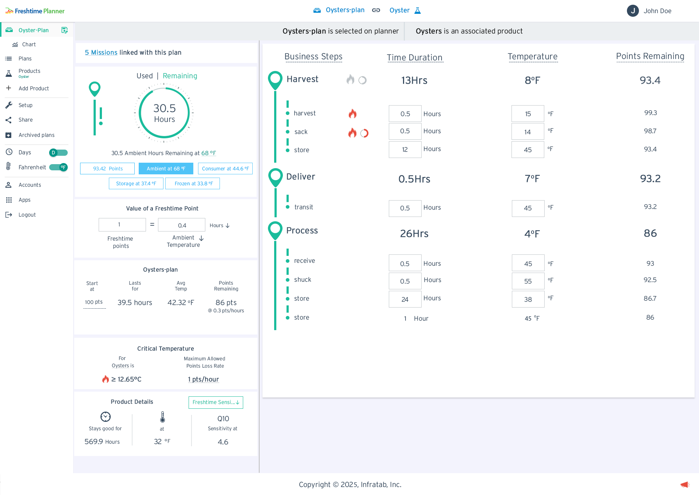
Food waste is a $1 trillion global problem — much of it caused by unseen freshness loss across supply chains. Freshtime Planner was designed to help teams predict and visualize product freshness before execution, turning complex operational data into clear decisions. By enabling brands to validate journeys from farm to consumer in advance, the platform helps reduce waste, protect quality, and drive smarter supply-chain planning.
Enable brand owners to simulate and validate product freshness at every business steps, ensuring trips stay within their freshness before execution.
Food producers, supply-chain managers, distributors, and quality control teams managing cold-chain logistics.
Responsive(Tablet) web application with complex data tables, interactive charts, and real-time parameter editing.
End-to-end design: research, information architecture, UX flows, component system, and 40+ production screens.
Brand owners had no tool to validate freshness viability before committing to a trip or process. Decisions were made reactively — after spoilage or quality failure — rather than proactively. Without a way to simulate cumulative time and temperature exposure across each business step, teams could not know whether a plan would exceed their quality thresholds until it was too late.
Planner loads operational data in advance and calculates cumulative freshness points consumed at each business step — based on time and temperature exposure — against predefined quality standards. Teams can adjust step parameters, see the impact instantly, and confirm a trip stays within budget before any pilot begins. Simulation replaces guesswork.
A structured design process that moved from discovery through system design to final delivery, with continuous validation at each stage.
Every screen built around a single job: help brand owners understand whether a planned trip consumes more product life than their quality standards allow — before committing to execution.
Plan summary stats, and the full business-step table with Time Duration, Temperature, and Points Remaining columns for each BizStep.
Activated by clicking a row. The selected sub-step turns orange, inline time/temperature inputs appear, and the top bar reveals three save options: Update Current Plan, Save as New Plan, or Cancel.
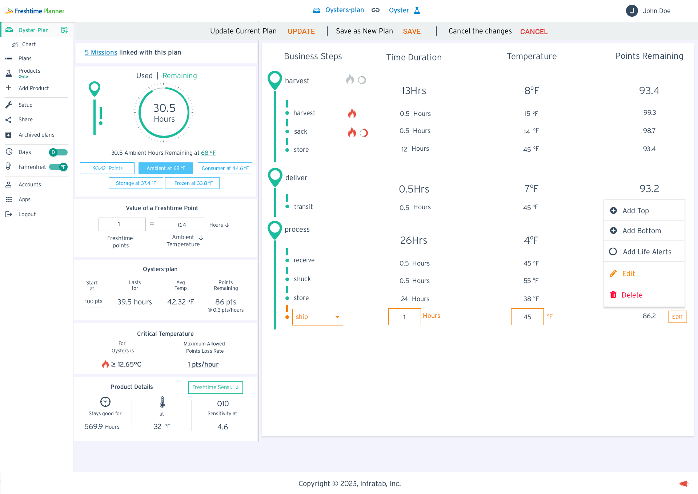
Right-click on Edit button any business step reveals a dropdown with: Add Top, Add Bottom, Add Life Alerts, Edit (edit the bizstep) , and Delete (Delete the bizstep).
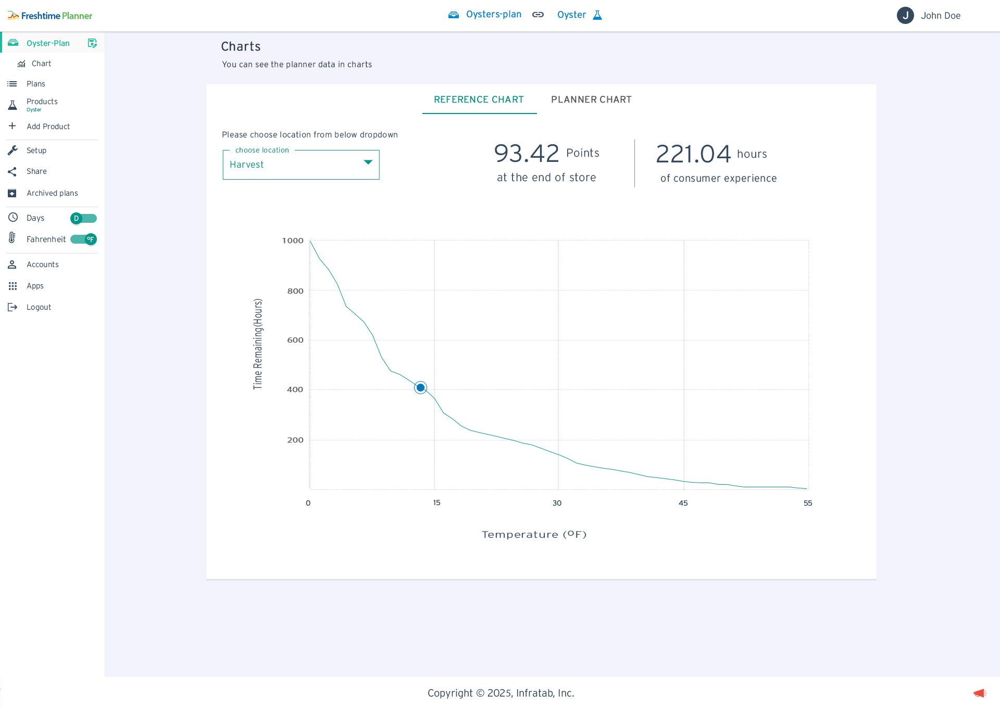
Shows product shelf life (Time Remaining in Hours) vs Temperature curve. A location dropdown reveals points remaining and hours of consumer experience at the end of that supply chain stage.
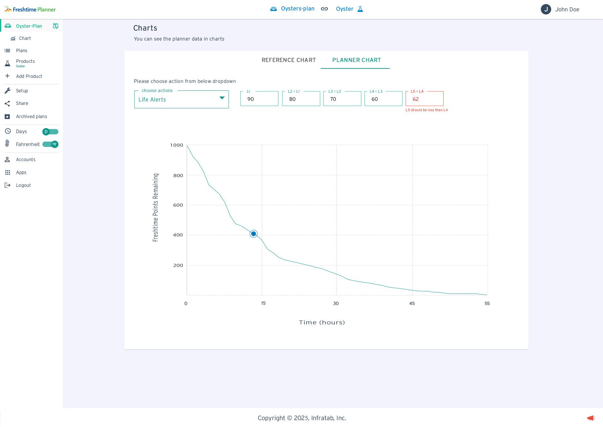
Planner Chart tab for configuring the alerts in the planner Table
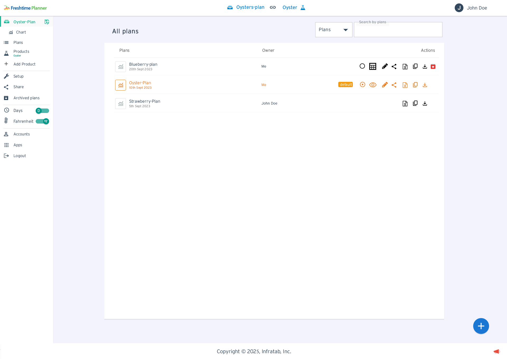
All plans with Owner, default badge, and a full action row: set default, preview, edit name (inline with Update/Cancel), share, export XML, copy, download, and archive/delete.
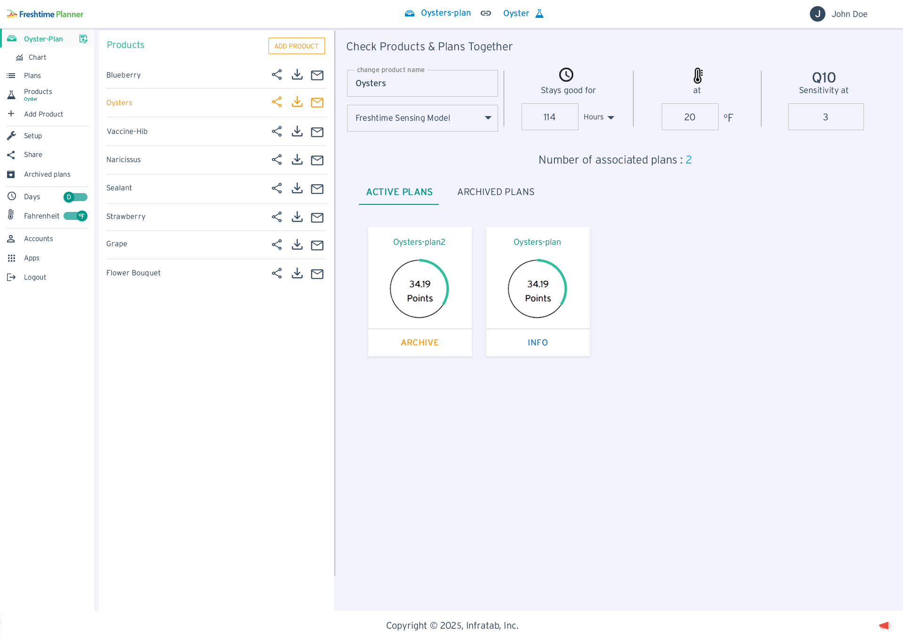
Product detail showing freshness model (stays good for, temperature, Q10), and associated Active Plans tab with point gauges and ARCHIVE | INFO actions per plan.
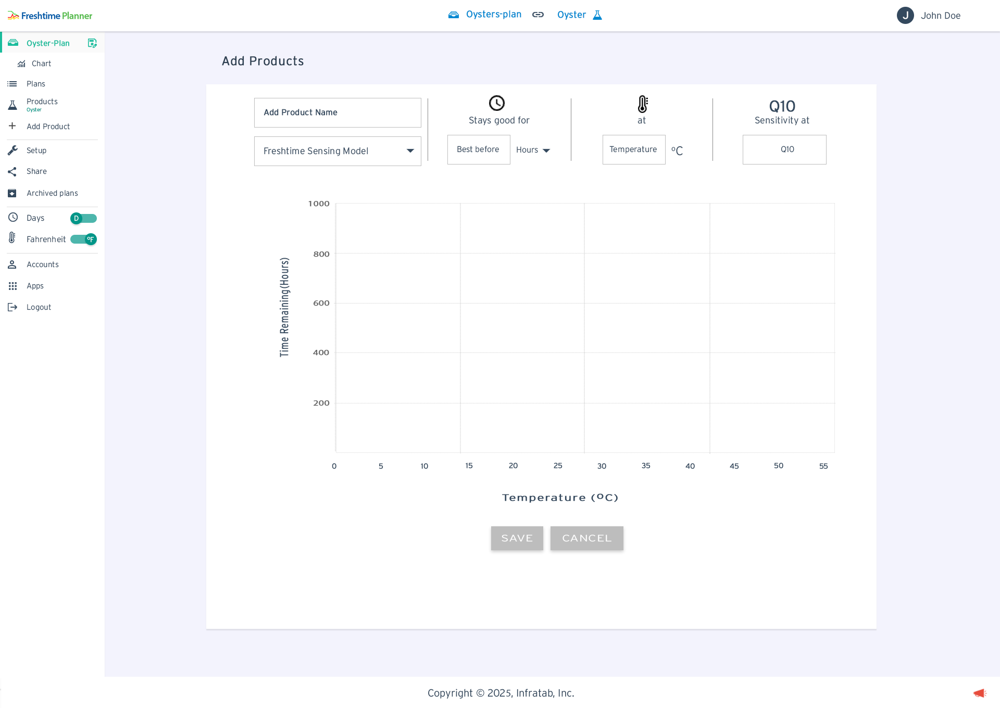
Form to add a new product: name, sensing model dropdown, best-before duration, temperature reference, and Q10 sensitivity. A live chart updates as values are entered. SAVE / CANCEL actions.
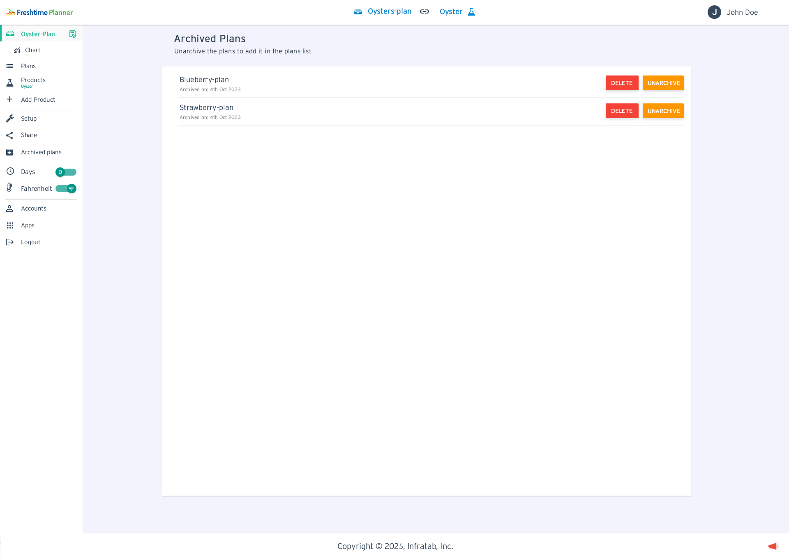
Archived plans are accessible form sidebar. Archive plan can be delete permanently or Unarchive plans in future if needed
A consistent component library, color system, and interaction patterns that scale across all screens and future features.
Teal is the primary brand and action color. Orange signals editable/warning states. Red is used exclusively for destructive actions (Delete). This three-level hierarchy makes consequence immediately readable without text labels.
The donut is the most-seen component in the app — appearing on the home planner, product check, and shared plan views. It shows Freshtime Points remaining as a radial fill with center text.
HIGH (>70)
MED (40–70)
LOW (<40)
Stroke color changes by threshold: teal (fresh), orange (caution), red (critical).
Used in: Home dashboard, Product Check, Plan cards in shared views.
The same underlying SVG chart component powers both the Reference Chart (temp on X axis) and the Planner Chart (time on X axis). A dot marker shows the current position in the journey.
Dashed threshold lines (L1–L5) are overlaid when Life Alerts mode is selected.
The persistent left sidebar maintains context across all views. The active plan name appears in the top-left as a constant anchor. Two global toggles (Days/Hours and °F/°C) in the sidebar.
5 configurable Life Alert levels (L1–L5) map to descending freshness points. Each threshold has a validation rule: each level must be less than the previous. Invalid entries are highlighted red with inline error text.
⚠ L5 should be less than L4
L5 (62) must be below L4 (60) — validation prevents saving incorrect alert sequences.
Planner's interface had to make complex simulation output immediately readable — and editable — without hiding the precision that brand owners depend on. These four decisions shaped how.
Rather than exposing raw Q10 sensitivity values and decay equations, we introduced Freshtime Points as the simulation's output language. Each product starts at 100 points. Each business step consumes points based on the time and temperature it applies. The running total is compared against predefined quality thresholds — so teams can see compliance at a glance.
The calculation is handled by the backend. The UI surfaces the result. This lets brand owners make proactive decisions about whether a trip is viable without needing to understand the underlying kinetics model.
"1 Freshtime Point = 0.4 Ambient Hours. The model runs silently — users see remaining budget and threshold status, not equations."
For simulation to be useful, users must be able to adjust step parameters — temperature, duration — and immediately see how the change affects cumulative freshness consumption. Early modal-based editing broke this loop: the plan context disappeared and users couldn't observe the budget impact in real time.
Inline editing keeps the full plan visible while a row is active. Orange highlighting signals the editable state. Points Remaining recalculates as values change — making the planner table interactive rather than a static report.
"Change 45°F → 38°F on the store step and watch Points Remaining update across every subsequent row. The plan recalculates without a page refresh."
Brand teams don't just need one validated plan — they need to compare scenarios. The three-way save bar (Update Current Plan · Save as New Plan · Cancel) makes scenario branching a first-class action. Teams can modify a step, save as a new plan, and directly compare simulations side by side without losing the original baseline.
When a shared plan is open, Update is hidden and a permissions banner explains why — keeping team collaboration clean without requiring a separate permissions settings flow.
"The bar shows all three options at once: UPDATE · SAVE · CANCEL. No guessing what will happen — every outcome is visible before committing."
Validated plans are operational records — they represent a trip that was tested and approved before execution. Deleting one by accident could erase a baseline that a team spent time building. The archive-before-delete flow adds structural friction: plans are archived first, and permanent deletion is only available from the dedicated Archived Plans page.
Color semantics reinforce the hierarchy: teal for reversible actions (Archive, Unarchive), red only for permanently destructive ones (Delete). Users read the consequence from color before reading the label.
"DELETE buttons appear only on the Archived Plans page — a deliberate second layer. No plan is ever lost by accident.
Three primary journeys define how users interact daily. Below them, the edge cases and error states that make the system robust.
Navigate to Plans → create a new plan and assign a product with its freshness model
Add business steps (harvest, deliver, process) and define sub-steps for each
Set time duration and temperature for each sub-step using inline editing
Points Remaining column updates live — showing cumulative freshness consumed
Check gauge and totals against quality thresholds — adjust steps until plan is within budget
Save the validated plan as the baseline before pilot or rollout
Open a validated plan and modify a business step parameter (e.g. lower store temperature)
Observe live recalculation — see how the change improves remaining freshness budget
Click Save as New Plan from the three-way save bar to fork the scenario
Both plans appear in the Plans list — original baseline and new scenario preserved
Share the scenario plan with teammates for review via the Share page
Team accepts and views the simulation — can fork their own copy without affecting the original
Click Chart in the sidebar to open the analysis view
Reference Chart: see how shelf life varies with temperature for this product
Select a business step location — a dot marks the plan's temperature on the curve
Switch to Planner Chart: see cumulative freshness points consumed over the full trip duration
Filter by BizStep to isolate harvest, deliver, or process segments on the decay curve
Configure Life Alert thresholds (L1–L5) to mark quality decision points on the chart
Edge Cases & Error States Designed: Not just the happy path. The system covers validation states (L5 > L4 alert), permission barriers (shared plan read-only), empty states (no plans, no products), and unit-mismatch warnings when accepting shared plans from users with different temperature unit settings.
When L5 ≥ L4, the L5 input turns red and "L5 should be less than L4" appears. The save action is blocked until corrected. All other fields remain editable.
A persistent banner replaces the normal save bar: "This plan cannot be updated as it is created by other member." UPDATE is hidden; only SAVE (as new) is available.
When accepting a plan from a user with different temp units, a notice explains: "The units of the shared items are kept as they are (change)" with a link to update preferences.
A 🔥 icon appears next to any sub-step where temperature exceeds the product's critical threshold, alerting to accelerated freshness loss.
The three-way banner (UPDATE · SAVE · CANCEL) makes the cancel action explicit. CANCEL is always visible, styled in ghost/neutral to clearly signal it discards changes.
DELETE only appears in the Archived Plans page — never alongside active plans. Unarchive and Delete are always presented together so recovery is always the first option seen.
Translating a complex scientific model into an intuitive daily tool required continuous iteration. Here's what the design delivered and what we learned.
Q10 kinetics are real science. The Freshtime Points currency gave every type of user a shared vocabulary without dumbing down the underlying model. Getting this abstraction right was the most important design decision in the project.
Keeping the active plan name in the nav, the Donut chart always visible, and the table visible during editing meant users always knew where they were and what they were changing — critical in a data-dense tool.
Inconsistent units (°F vs °C) across shared plans eroded confidence quickly in testing. Making unit preservation explicit in the share flow — with a clear notice and change link — was a small design decision with a large impact on perceived reliability.
Initial card-based designs were more attractive but required more clicks. The planner table — with inline edit, sticky headers, and clear hierarchy — was unanimously preferred by all 8 users in testing for daily operational use.
Team users needed to see and reference each other's plans, but not accidentally overwrite them. The read-only + fork pattern gave everyone full visibility with clear ownership boundaries — enabling knowledge transfer without risk.
The guest demo mode works because the simulation is already populated with real operational data. Prospective users experience genuine output — real decay curves, real point calculations, real threshold comparisons — without needing to configure anything. The product validates itself.
Unauthenticated users can explore the full planner with a pre-loaded Oyster-Plan demo — experiencing the core product before committing to an account. This was a deliberate acquisition design decision.
A persistent top-right CTA "To add your own plans, you need to LOGIN / FRESHTIME CLOUD" is always visible — converting curiosity into sign-ups without interrupting exploration.
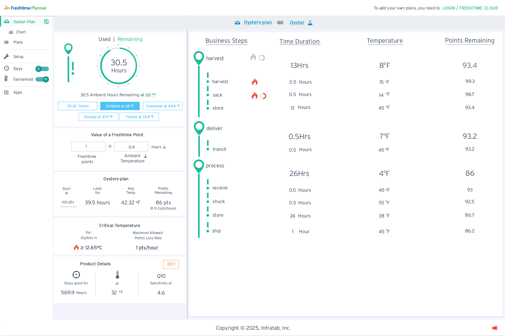
Full planner view pre-loaded with Oyster-Plan. Sidebar shows only Chart, Plans, Setup, Days/Fahrenheit toggles, and Apps — no Share, Add Product, Archived Plans, or Accounts. Top-right CTA persists on every screen.
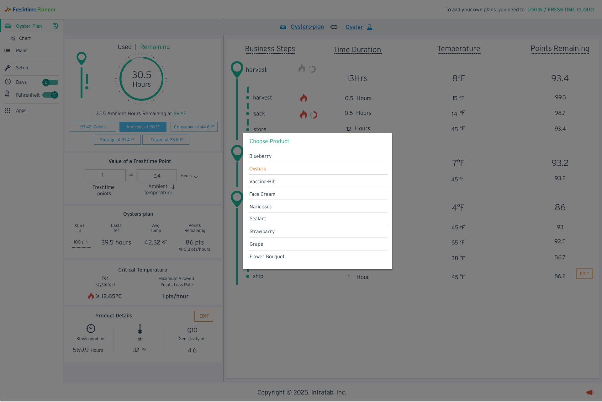
Clicking the product icon opens a full-page modal listing 9 pre-loaded products: Blueberry, Oysters (active, orange), Vaccine-Hib, Face Cream, Naricissus, Sealant, Strawbarry, Grape, Flower Bouquet. Selecting any switches the entire planner context.
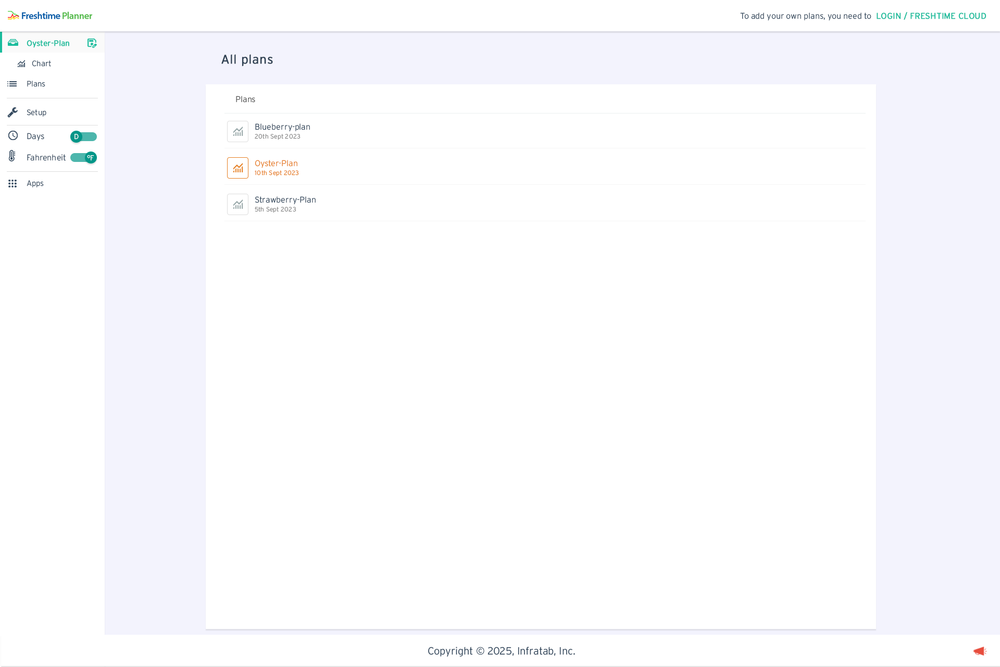
Shows 3 demo plans: Blueberry-plan (20th Sept), Oyster-Plan (10th Sept, active — orange), Strawberry-Plan (5th Sept). No action buttons, no edit/share/archive controls. Clean list that lets guests understand the plan management concept without ability to modify.
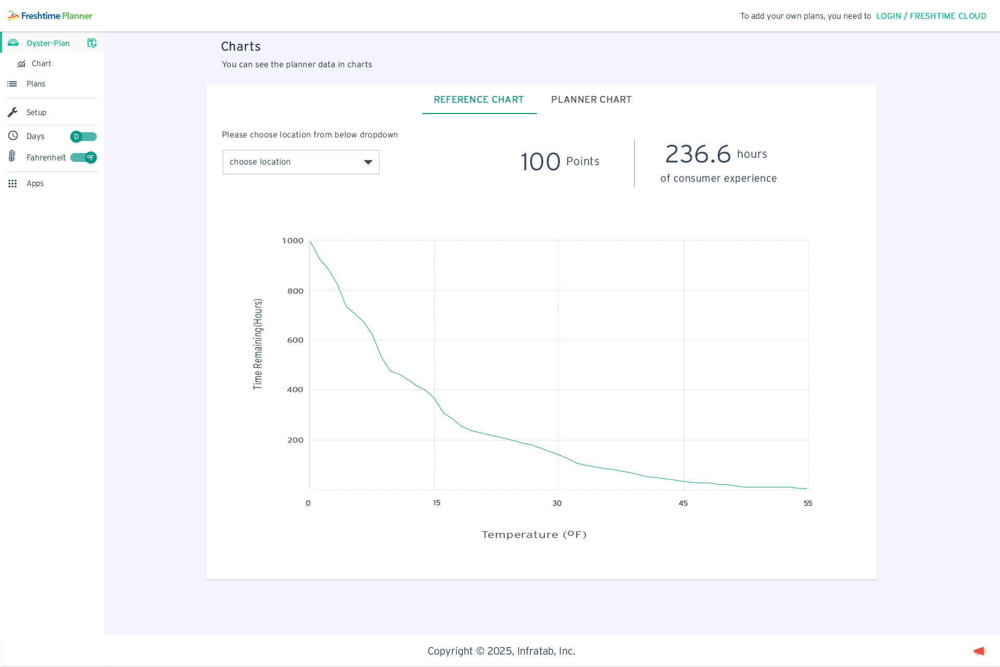
Reference Chart tab is active (underlined teal). "Choose location" dropdown shown empty. Header already displays baseline: 100 Points and 236.6 hours of consumer experience — the product's maximum freshness at start.
After selecting "Harvest" from the location dropdown, the header updates to show 93.42 Points at the end of store and 221.04 hours of consumer experience. A dot marker appears on the decay curve at the harvest temperature point (~15°F).
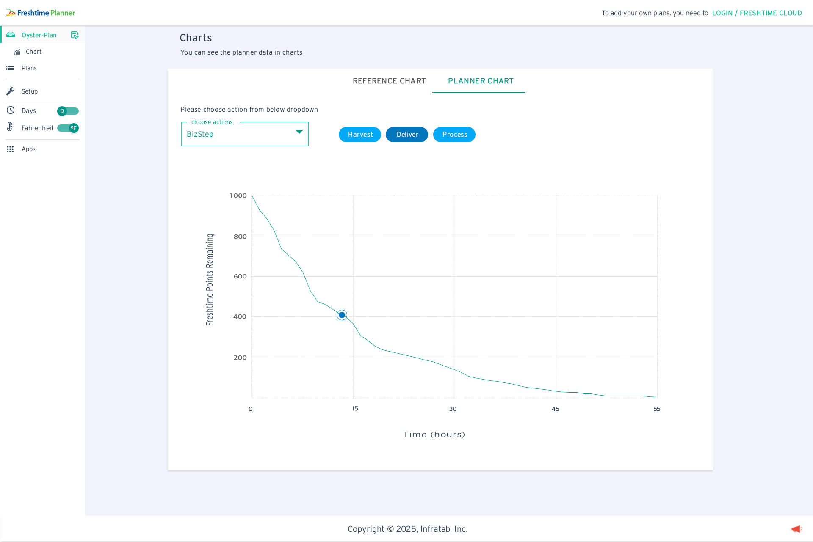
Planner Chart tab selected (teal underline). Dropdown set to BizStep — three teal pill buttons appear: Harvest, Deliver, Process. The decay curve shows Freshtime Points Remaining vs Time (hours) with the marker dot at the current plan position.
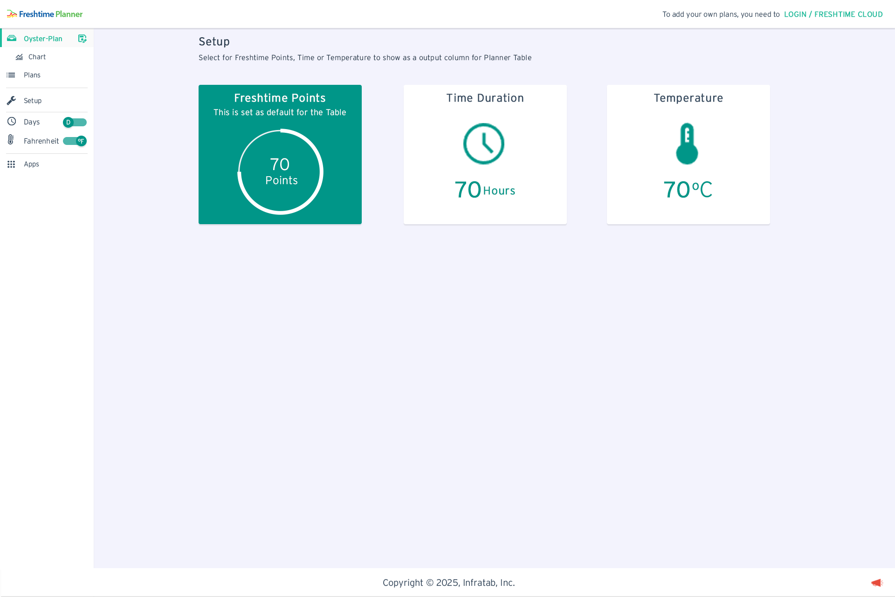
Dropdown set to Life Alerts — five threshold inputs (L1=90, L2=80, L3=70, L4=60, L5=62) appear inline. L5 is highlighted red as 62 > 60 (L4). The validation message "L5 should be less than L4" appears below. Threshold dashed lines overlay the decay curve.
Full Setup page available to guests. Three large cards: Freshtime Points (selected, teal background, shows 70 Points with circular gauge + "This is set as default for the Table"), Time Duration (70 Hours + clock icon), Temperature (70°C + thermometer icon). Clicking switches the planner table's output column.
Traditional SaaS tools gate everything behind sign-up. Freshtime Planner's domain — food safety science — is unfamiliar to most buyers. They need to experience the Points system, see the decay curve, and understand the supply chain model before they trust the product enough to create an account.
The demo mode is full-fidelity: real data, real charts, real interactions. The only restriction is saving. This converts passive curiosity into product understanding — which converts far better than a feature list ever could.